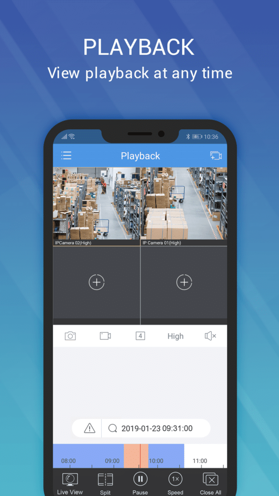
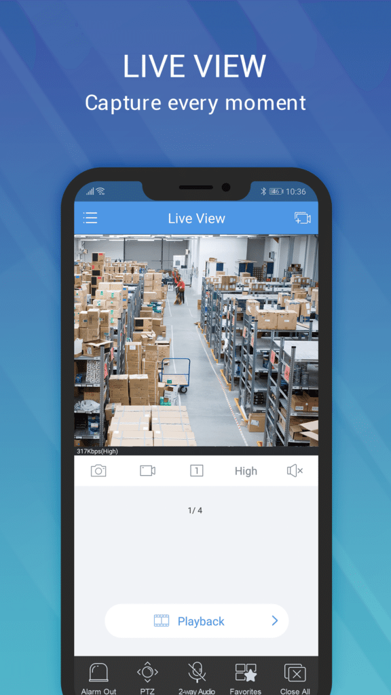

EZView 版本进化史：从单画面监控到四路同步回放的八年迭代
一台手机同时看四路录像、远程校准 PTZ、分享权限随时撤销——EZView 这一路是怎么走过来的。
现在这版，能做什么
我手上这台设备，同时拉着四条高清流——客厅门口、车库、后院围墙、巷口拐角，四个画面在手机屏幕上各占一角，时间轴同步推进。我拖其中一条，其他三条跟着跳。看到巷口那个人影，点一下"切实况"，回放窗口直接跳到实时画面，不需要重新进设备列表。
这是 EZView官网 最新版的多通道回放能力。放在五六年前，监控客户端的回放逻辑是"一次一台、看完换下一台"。取证时要对比多台 IPC 的时间线，得在四台设备之间反复切换，记下来再人工比对——效率极低。
从哪起步：样本文档没说的早期
样本文档里没有版本号列表，也没有 changelog。这本身可能就是一个线索——EZView 的开发团队似乎不太在意对外讲述自己的历史，他们更关心的是"当前版本能不能把这个场景跑通"。
从样本文档的功能密度倒推，这款软件的早期版本应该只做了最基础的一件事：把 IPC/NVR 的实况画面搬到手机上。那时候没有 PTZ 手势、没有云账号分享、没有多通道回放——你能看到画面，就够了。
关键转折点一：云账号体系的引入
样本文档里反复出现"一机一绑"、"分享角色"、"EZCloud"这些概念。云账号不是监控软件的标配——很多竞品至今还是本地局域网直连。EZView 选了这条路之后，整个产品的逻辑变了：
- 设备归属从"局域网 IP"变成"云账号名下"
- 多设备访问从"多人共用一个账号"变成"一个主账号 + 多个被分享方"
- PTZ 指令、回放请求、固件升级（升级包从官方下载获取）——所有远程操作都不再是"直连设备"，而是"走云端中转"
这个转折点的具体版本号文档里没提，但从分享历史、角色权限、撤销回收这些细节的成熟度来看，不是一蹴而就的——至少经历了三到四个大版本的打磨。
多通道回放：憋了三个版本才来的功能
EZView文档里最抢眼的功能就是 4 路同时回放。但说实话，这类功能在开发优先级上通常很低——大多数用户不需要，少数需要的人又"理论上可以用 PC 端解决"。
EZView 团队显然不这么想。文档里花了大量篇幅讲时间同步、资源消耗应对、回放切实况——显然这个功能不是"加上去就行"，而是经过了反复调试：
- 时间轴同步：4 路回放开始后，拖一条时间轴其他三条跟着跳。这个交互细节需要客户端同时处理四条设备的时间戳，还得考虑设备时间本身就不准的情况。
- 时间校准指引：文档专门有一节讲"回放时间轴不准"——从设备 NTP 到时区统一，甚至到取证场景的 ±30 秒误差校验。这说明团队收到了大量"对比时间不对"的反馈，专门做了排查路径。
- 回放切实况：取证场景的痛点设计。发现嫌疑人"现在就在那"，一键切过去盯住，不需要手动重新进设备列表。
从单画面到 4 路同步，这个跨度不是"加几个按钮"能完成的。客户端的解码能力、P2P 连接数、时间戳处理逻辑都得重构。

远程运维：团队一直在死磕的东西
如果说多通道回放是"功能亮点"，那远程运维就是 EZView 团队一直在死磕的底层能力。样本文档里故障排查类的内容占了很大比重——PTZ 不动怎么查、固件怎么升、时间怎么校准、录像计划怎么改。
PTZ 校准这一块尤其能看出迭代痕迹：
- 早期可能只有"方向键 + 速度档位"
- 后来加了"自动校准"——球机被外力碰过之后能自动回到零点
- 再后来加了"手动校准设为零点"——自动校准不准时，用户可以手动转到正前方确认
- 最新版本的预设位跳转也跟校准挂钩：校准跑完之后所有预设位自动修正，不需要重新存储
每一步都是在解决真实用户反馈的问题。而且这些问题都是远程才能遇到的——在现场可以直接拧球机、查线缆，远程就只能靠软件逻辑兜底。

什么一直不管：分享历史的批量清理
样本文档里有一个地方写得很直白："EZView 暂不支持手动批量删除分享历史。如果实在嫌太长，只能通过 EZCloud Web 端查看有没有清理选项。"
分享历史默认不自动清除，好处是审计回溯，坏处是列表越来越长。这是典型的"非核心"功能——不影响主流程，做了又得设计一堆交互。团队的优先级排序很清楚：先做取证场景需要的多通道回放，再做远程运维的固件升级和 PTZ 校准，批量清理分享历史可以等等。
这种取舍贯穿了整个版本迭代：先服务专业场景（取证、远程运维），再照顾普通用户的便利需求。
从迭代规律看团队的优先级
把样本文档里的功能拼起来看，EZView 的开发节奏有一条清晰的主线：
- 先把"看"做好：实况画面、回放、时间轴、码流切换——这是监控软件的基本盘
- 再把"远"做好：云账号、P2P 连接、远程 PTZ、远程固件升级——让手机真的能当远程控制终端
- 然后把"深"做好：4 路同步回放、时间校准指引、取证导出校验——瞄准专业场景的深度需求
这个顺序很有意思。很多竞品的路线是"先堆功能数量，再补底层稳定性"。EZView 反过来，底层能力（云账号、时间同步、远程运维）花了好几个版本打基础，然后才在这个基础上长出多通道回放这种看起来很炫的功能。
下一步大概会是什么
从现有迭代规律推，我猜 EZView 接下来的版本会往两个方向走：
第一个方向：取证场景的进一步自动化。文档里已经提到了"检测触发录像"、"人体检测"、"自动跟踪"——如果把这些和回放结合起来，比如"按人体检测事件自动跳转到对应录像片段"，对取证来说是真正的效率提升。
第二个方向：分享权限的精细化。现在分享已经有角色（管理员/操作员/查看者）和有效期，但还缺"按时间段分享"——比如"只允许对方周末下午看"、"只允许看回放不许 PTZ"。这类需求在实际运维中很常见，但当前版本还没覆盖。
当然这只是从迭代规律推的，不当官方口径传。样本文档没提的部分恰恰说明——团队很可能正在闷头搞别的东西，说不定是比我猜的更底层的重构。
顺手交代一句
这套资料在GitHub、Gitee、GitCode都能拿到，GitHub 维护着完整的版本历史和功能说明，国内访问 Gitee 或 GitCode 镜像仓库速度会快不少。